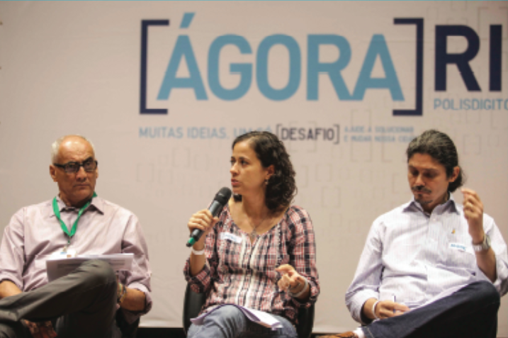
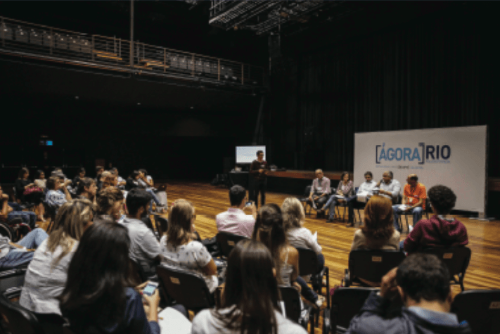

Na Grécia Antiga, as pessoas se reuniam para discutir a cidade e as políticas nas praças públicas, chamadas de Ágoras. No mundo moderno, a internet é o principal espaço de encontro e discussão, e o Ágora Rio é o canal da Prefeitura do Rio para o debate e a construção conjunta de uma cidade melhor.
O Ágora Rio é uma plataforma inovadora criada para a gestão municipal debater políticas públicas de igual para igual com cidadãos e cidadãs cariocas. A plataforma é uma rede social gameficada, em que secretarias, autarquias, institutos e órgãos municipais têm perfis assim como os moradores e moradoras da cidade, que podem se cadastrar por suas redes sociais e ganhar pontos de acordo com seu engajamento.
Cada desafio temático dura três meses, cujo produto final é um documento construído colaborativamente com as propostas melhor avaliadas pelos próprios usuários e usuárias da plataforma, que então é estudado pela Prefeitura e comentado pelo Prefeito em uma videoconferência. Na ocasião, ele apresenta como e por que as propostas recebidas serão ou não levadas adiante. O primeiro o desafio começou em setembro de 2014 e teve como tema o Legado dos Jogos Olímpicos e Paralímpicos de 2016.
Veja aqui como foi o primeiro desafio.


A primeira etapa do Desafio é a de proposição, na qual os participantes podem fazer suas propostas e discutir com os demais usuários da plataforma. Nesta fase, a Prefeitura do Rio acompanha com suas secretarias, a fim de esclarecer quais projetos, já estão sendo realizados ou citando outras limitações eventuais.
A segunda etapa é a de discussão. Neste momento, são realizados encontros presenciais em diversos locais da cidade para promover o diálogo e a troca de conhecimento entre representantes da prefeitura e a população.
Na terceira etapa, os cariocas podem avaliar suas ideias favoritas, compondo um ranking das ideias mais bem avaliadas.
Encerrada a escolha, os usuários ajudam na produção colaborativa do documento final com as informações mais relevantes sobre as ideias finalistas. Em seguida, o documento é entregue ao prefeito para que as propostas sejam analisadas pelos técnicos e técnicas da Prefeitura. Dez dias depois, o prefeito realiza uma vídeoconferência para comentar o documento e dizer quais propostas serão levadas adiante e por quê.
Durante o Desafio também são realizados eventos presenciais de apresentação e de discussão que acontecem em diversos locais do Rio.
Na primeira fase do primeiro desafio foram realizados encontros no Complexo do Alemão, Madureira, Ipanema e Cidade de Deus, onde a equipe do Ágora levou a discussão também para o mundo real, fazendo apresentações da plataforma e oficinas de propostas junto a representantes da Empresa Olímpica Municipal (EOM).
Já na fase de discussão de ideias, os eventos foram no Méier e na Zona Portuária, ocasiões em que o debate foi direcionado para os eixos temáticos mais comentados da plataforma: Mobilidade, Sustentabilidade, Educação e Lazer, envolvendo representantes de órgãos municipais e cariocas interessados na discussão das propostas.
Rua São Clemente, 360, Botafogo Rio de Janeiro - RJCEP 22260-000Brasil
+55 (21) 2976-9708